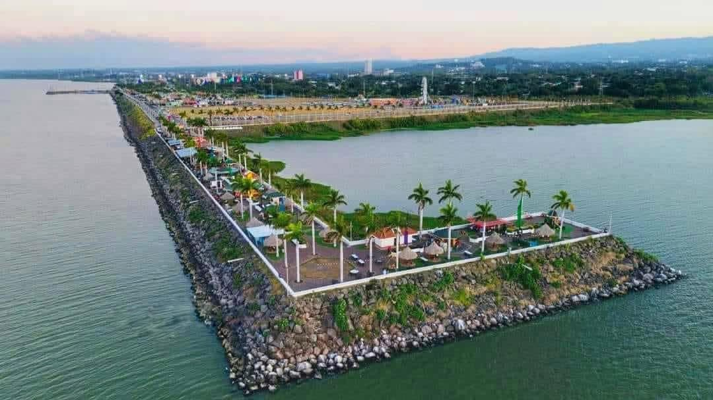
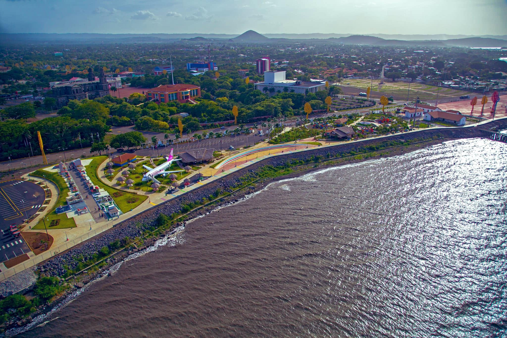
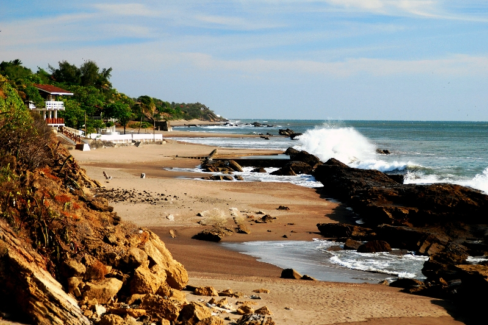

Ven y conoce Nicaragua
¡Si la patria es pequeña uno grande la sueña!
Masatepe
Ubicado en el departamento de Masaya, Masatepe es famoso por su deliciosa gastronomía (como el tradicional Mondongo), su clima fresco en la Meseta de los Pueblos, su artesanía en madera y mimbre, y sus arraigadas tradiciones religiosas.

Granada
La posición geográfica de Granada, Nicaragua, a orillas del Lago Cocibolca, ha determinado su historia. Su mayor acontecimiento fue su fundación en 1524 (celebrando su V centenario en 2024), siendo considerada la ciudad más antigua del continente americano asentada en tierra firme.


León
Ciudad universitaria e histórica, hogar de la majestuosa Catedral de León y famosa por el turismo de aventura en el Cerro Negro.


Managua
El acontecimiento más importante en la historia de Managua fue su designación como capital de la República de Nicaragua el 5 de febrero de 1852, una decisión tomada para resolver la rivalidad





Diriamba
Diriamba es una ciudad y municipio del departamento de Carazo, ubicada a unos 42 kilómetros al suroeste de Managua. Conocida como la "Cuna del Folclore Nicaragüense", se sitúa en la Meseta de los Pueblos a 576 metros de altitud y destaca por su herencia cultural, su clima fresco y sus tradiciones.



Matagalpa
Matagalpa (la "Perla del Septentrión") es la tercera ciudad más poblada de Nicaragua, famosa por su tradición cafetalera y su historia de resistencia indígena. Su posición geográfica estratégica en las tierras altas del centro del país ha marcado su trascendencia histórica.